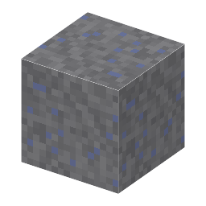

Stibnite Ore・ブロック・Metallurgy
仮（まだ本物どおりでない所がある）
本当の歴史：[1-43] アンチモン（紀元前3000年）

①子ども 針のように細長い、銀灰色の結晶の鉱石。アンチモンの原料。
②学生 Sb2S3。方鉛鉱と同じ熱水鉱脈の帯（高さ -16〜64）にできる。石のツルハシ以上で掘る。
③大人 熱い水に溶けて地下を流れてきた金属と硫黄が、岩の割れ目で冷えて結晶になった（熱水鉱脈）。
④ガチ 愛媛県の市ノ川鉱山の輝安鉱は、長さ数十cmの見事な結晶で世界中の博物館にある。
（作り方のレシピは無い：拾う・掘る・ほかの方法）
（このアイテムを使うレシピは無い）